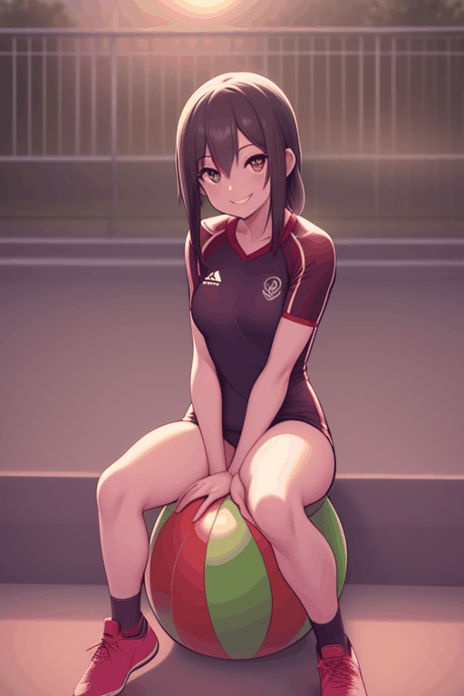
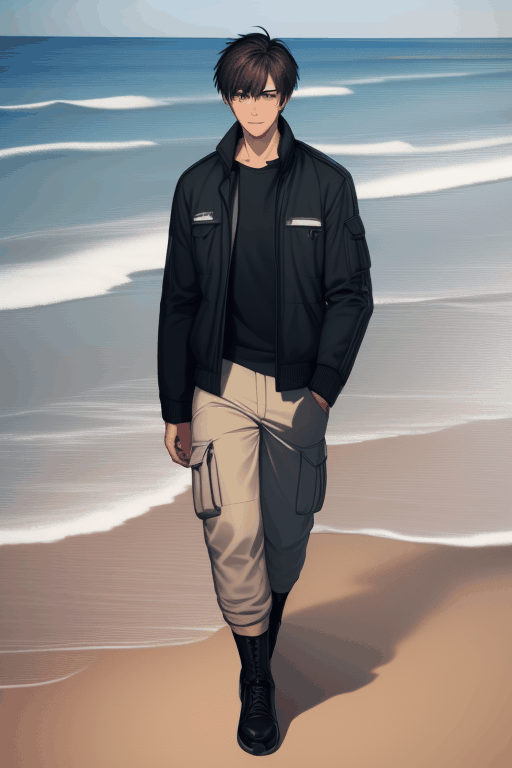

生成完整角色動畫 - 1 (公園長椅四季變換)
使用提示詞:
"0" :"spring, sitting on a wooden bench, denim jacket, white shirt, cherry blossoms blooming, soft warm sunlight, falling petals",
"10" :"spring, sitting on a wooden bench, denim jacket, white shirt, cherry blossoms blooming, soft warm sunlight, falling petals",
"20" :"spring, sitting on a wooden bench, denim jacket, white shirt, cherry blossoms blooming, soft warm sunlight, falling petals",
"30" :"summer, sitting on a wooden bench, striped short-sleeve shirt, shorts, green lush trees, bright sunlight, dappled shadows",
"40" :"summer, sitting on a wooden bench, striped short-sleeve shirt, shorts, green lush trees, bright sunlight, dappled shadows",
"50" :"summer, sitting on a wooden bench, striped short-sleeve shirt, shorts, green lush trees, bright sunlight, dappled shadows",
"60" :"autumn, sitting on a wooden bench, cozy orange sweater, beanie, fallen orange and brown leaves, sunset light, slight wind",
"70" :"autumn, sitting on a wooden bench, cozy orange sweater, beanie, fallen orange and brown leaves, sunset light, slight wind",
"80" :"autumn, sitting on a wooden bench, cozy orange sweater, beanie, fallen orange and brown leaves, sunset light, slight wind",
"90" :"winter, sitting on a wooden bench, thick down jacket, scarf, gloves, snowy background, bare trees, cold breathing steam",
"100" :"winter, sitting on a wooden bench, thick down jacket, scarf, gloves, snowy background, bare trees, cold breathing steam",
"110" :"winter, sitting on a wooden bench, thick down jacket, scarf, gloves, snowy background, bare trees, cold breathing steam"
生成完整角色動畫 - 2 (足球靜態肖像變換)

使用提示詞:
"0" :"street football pitch, sitting on a ball, sportswear, sunset lighting, smiling, warm soft light, background dust",
"10" :"street football pitch, sitting on a ball, sportswear, sunset lighting, smiling, warm soft light, background dust",
"20" :"street football pitch, sitting on a ball, sportswear, sunset lighting, smiling, warm soft light, background dust",
"30" :"locker room, sitting on a bench, clean team jersey, holding a helmet, tired but focused, cinematic moody lighting, water bottle nearby",
"40" :"locker room, sitting on a bench, clean team jersey, holding a helmet, tired but focused, cinematic moody lighting, water bottle nearby",
"50" :"locker room, sitting on a bench, clean team jersey, holding a helmet, tired but focused, cinematic moody lighting, water bottle nearby",
"60" :"packed stadium center, standing still, muddy jersey, looking up at the crowd, rain on face, dramatic stadium floodlights, breathing out visible steam",
"70" :"packed stadium center, standing still, muddy jersey, looking up at the crowd, rain on face, dramatic stadium floodlights, breathing out visible steam",
"80" :"packed stadium center, standing still, muddy jersey, looking up at the crowd, rain on face, dramatic stadium floodlights, breathing out visible steam",
"90" :"championship podium, standing still, gold medal around neck, kissing a trophy, emotional smile, confetti slowly falling, intense bright lights",
"100" :"championship podium, standing still, gold medal around neck, kissing a trophy, emotional smile, confetti slowly falling, intense bright lights",
"110" :"championship podium, standing still, gold medal around neck, kissing a trophy, emotional smile, confetti slowly falling, intense bright lights"
生成完整角色動畫 - 3 (賽博龐克風格變換)

使用提示詞:
"0" :"cyberpunk city, neon lights, glowing visor, oversized hoodie, heavy rain, reflection",
"10" :"cyberpunk city, neon lights, glowing visor, oversized hoodie, heavy rain, reflection",
"20" :"cyberpunk city, neon lights, glowing visor, oversized hoodie, heavy rain, reflection",
"30" :"hacker den, holographic screens, cybernetic arm, techwear jacket, cables, dim light",
"40" :"hacker den, holographic screens, cybernetic arm, techwear jacket, cables, dim light",
"50" :"hacker den, holographic screens, cybernetic arm, techwear jacket, cables, dim light",
"60" :"mega corporate skyscraper, sleek suit, data glasses, floating drones, clean glass reflection",
"70" :"mega corporate skyscraper, sleek suit, data glasses, floating drones, clean glass reflection",
"80" :"mega corporate skyscraper, sleek suit, data glasses, floating drones, clean glass reflection",
"90" :"highway skyline, flying cars, leather jacket, LED face mask, neon trails, speed blur",
"100" :"highway skyline, flying cars, leather jacket, LED face mask, neon trails, speed blur",
"110" :"highway skyline, flying cars, leather jacket, LED face mask, neon trails, speed blur"